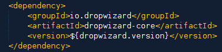

Autorzy:
Łukasz Klich / @KleeWho
Patryk Najda / @patryknajda
Dropwizard jest biblioteką/frameworkiem, który znacznie upraszcza tworzenie mikroserwisów, np. RESTful API.
Wymagania
Kilka faktów:
Główne zalety:
Szybkość
(2-3 sekundy od uruchomienia do obsłużenia pierwszych żądań)
Wg autorów wydajność jest na poziomie 30K - 50K żądań na sekundę
Prosty w obsłudze ...

java -jar hello-world.jar server config.yml
... ale bogaty w środku (ficzery)
Przejrzystość
@Timed public Message sayHello()
"pl.example.dropwizard.resources.HelloWorldResource.sayHello" : {
"count" : 4,
"max" : 3.75816E-4,
"mean" : 2.525375E-4,
"min" : 9.8894E-5,
"p50" : 2.6772E-4,
"p75" : 3.51395E-4,
"p95" : 3.75816E-4,
"p98" : 3.75816E-4,
"p99" : 3.75816E-4,
"p999" : 3.75816E-4,
"stddev" : 1.1471958530114492E-4,
"m15_rate" : 0.04205479068014098,
"m1_rate" : 0.004288497533733403,
"m5_rate" : 0.01200626452609733,
"mean_rate" : 0.029354800544471447,
"duration_units" : "seconds",
"rate_units" : "calls/second"
}